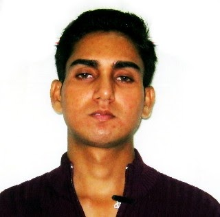
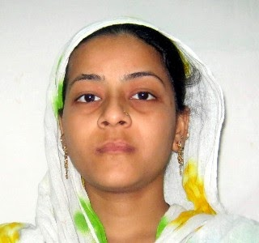
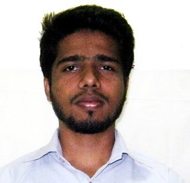

OUR HISTORY
Jeevan Dhara has its inception in one man’s struggle to alleviate the pain and suffering of the poor.
Gene D’Silva founder of Jeevan Dhara started his outreach work in 1998 in Asia’s second largest slum community namely Chita Camp, Trombay, Mumbai. For the first two years the goal was to get the HIV +ve patients accepted socially by the community. Identifying the needy by going door to door he provided food ration to 350 widows, school fees for children between the ages of 3 to 6 years of HIV +ve widows and providing medical assistance to the HIV +ve patients. Simultaneously from the 3rd year Balwadis and Study classes were started to help the children ... MORE
How Will Your Donations Help Us?
1) The Donations will be directly used for providing Food and Essentials for underpriviledged.
2) Masks,Sanitizers,PPE kits will be directly sent to the healthworkers by our team.
3) One Person's Donation can feed a whole Family of underpriviledged and daily wage workers.
4) One Donation can even help a child get Education and a bright future"
OUR PROJECTS
"Jeevan Dhara believes that there can be no substitute for education to a better life because it empowers an individual to earn his/her livelihood and increases one's awareness on a range of issues from healthcare to appropriate social behavior to knowing one's rights and in the process evolve as a better citizen. Education is the most effective tool which helps a person build a strong foundation, enabling them to free themselves from the vicious cycle of ignorance, poverty and disease. Once a person is educated and relevantly skilled to be employed and begins earning, the journey of empowerment continues for posterity.
OUR PEOPLE
 
Subscribe to our newsletter and follow us on our social media platforms to get daily updates or mail us for any queries